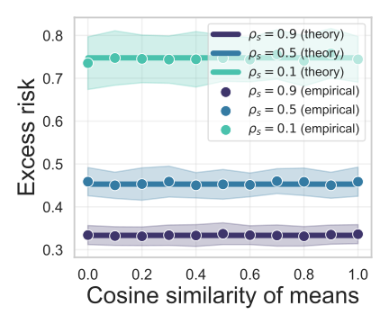
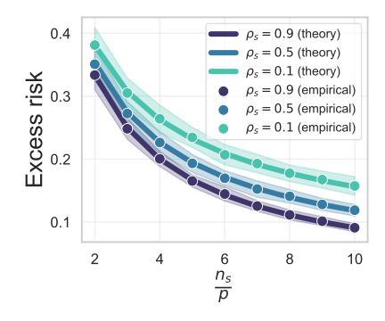
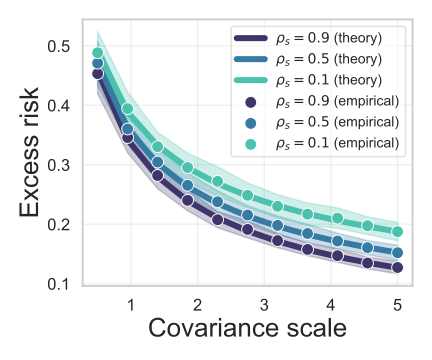
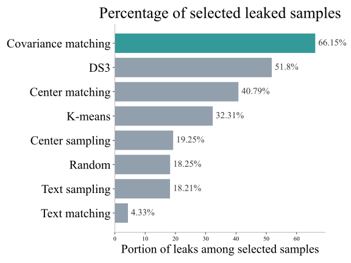
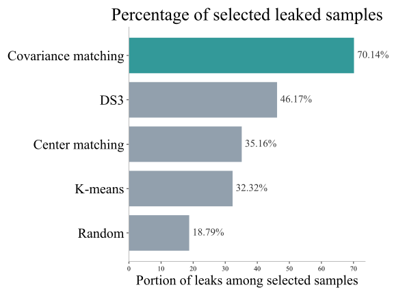

High-dimensional Analysis of Synthetic Data Selection
When you augment with generated data, match the covariance — not the mean
Does extra synthetic data actually help train a classifier, and if so, which of its properties matter? Studying this through high-dimensional ridgeless regression, we prove that — for linear models — the test error of an augmented estimator depends on the covariance shift between target and synthetic data but, surprisingly, not on the mean shift, provided the real training set is not too small relative to the synthetic one. This implies a simple selection rule: match the synthetic covariance to the target’s. The insight transfers to deep networks and modern generators: a covariance-matching selector performs on par with, and often outperforms, recent synthetic-data-selection baselines across training paradigms, architectures, datasets, and generative models.
The question
Modern generative models can produce an essentially unlimited supply of synthetic training images, which is appealing whenever real data is scarce, private, or expensive to label. Yet the empirical record is mixed: some works find that generated data helps, others that simply retrieving more real data does at least as well (Burg et al. 2023; Fan et al. 2024), and some warn that training on generated data can even trigger model collapse (Shumailov et al. 2024). Beyond folklore rules like “synthetic data should be close to the real distribution,” it is unclear which properties of the synthetic distribution actually drive generalization.
This paper studies that question through the lens of high-dimensional regression, turning a vague heuristic into a precise — and actionable — selection rule.
Setup
We have a real training set (X_t, y_t) drawn from the target distribution and an additional synthetic set (X_s, y_s) from a different distribution (the output of a generative model). Empirical risk minimization is run on the augmentation \big((X_t, X_s), (y_t, y_s)\big), and the model is evaluated on a fresh sample from the target distribution. For tractable theory, each class is treated in isolation as a linear model y_t = X_t\beta + \varepsilon_t and y_s = X_s\beta + \varepsilon_s, with the rows of X_t having mean \mu_t and covariance \Sigma_t, and the rows of X_s having mean \mu_s and covariance \Sigma_s.1 The discrepancy between the two distributions is thus captured by a mean shift (\mu_t \neq \mu_s) and a covariance shift (\Sigma_t \neq \Sigma_s). The estimator analyzed is the min-norm (ridgeless) least-squares interpolator \hat\beta.
1 The theory treats a single class, fitting a regression to the label and ignoring cross-class interactions — a deliberate simplification for mathematical tractability. The resulting selection rule is then tested extensively in genuine multi-class classification settings.
The surprising theory
The central result is a deterministic equivalent for the excess risk of \hat\beta in the high-dimensional limit (where the dimensions of \beta, y_t, and y_s grow proportionally). In the under-parameterized regime, with M = \Sigma_s^{1/2}\Sigma_t^{-1/2} and \lambda_1 \ge \dots \ge \lambda_p the eigenvalues of M^\top M, the risk concentrates around
R_X(\hat\beta;\beta) \;\to\; \frac{\sigma^2}{n}\, \operatorname{Tr}\!\left[\left(\alpha_1 M^\top M + \alpha_2 I_p\right)^{-1}\right],
where \alpha_1, \alpha_2 solve a coupled fixed-point system. The striking feature is what is absent: this limit depends only on the covariances \Sigma_t, \Sigma_s (through M) and not on the means \mu_t, \mu_s.
This holds as long as the real training set is not too small relative to the synthetic set. It is genuinely surprising: when training on synthetic data alone, the paper shows the mean shift does enter the risk — so it is the presence of real data that washes the mean shift out.
So the mean shift, the very thing the “stay close to the real distribution” heuristic most naturally targets, drops out of the asymptotic risk. The covariance shift is what remains — and it can be optimized. The authors prove that, subject to a trace normalization \operatorname{Tr}[M^\top M] = p, the limit risk is minimized exactly when all eigenvalues of M are equal to one — i.e. when \Sigma_s \propto \Sigma_t. They call this covariance matching, and establish its optimality in both the under- and over-parameterized regimes (the latter for isotropic \Sigma_t = I_p).
The three panels below are simulations from the paper that illustrate the theory: the risk is flat as the means are aligned, but decreases as the synthetic covariance is brought toward the target’s (and as its scale grows).



Excess risk with real data from \mathcal{N}(\mu_t,\Sigma_t) and synthetic data from \mathcal{N}(\mu_s,\Sigma_s), where \Sigma_t,\Sigma_s are Kac–Murdock–Szegö matrices with decay parameters \rho_t,\rho_s (here \rho_t = 0.9, p = 600, n_t = n_s = 1200); solid lines are theory, markers are 100-trial empirical means with \pm 1 s.d. bands.
From theory to practice
The selection rule that falls out is disarmingly simple. Given a pool of generated images, greedily build the synthetic set S by repeatedly adding the sample that most reduces \lVert \widehat\Sigma(S \cup \{x\}) - \widehat\Sigma_t \rVert_F, where the covariances are computed over CLIP features (in a 32-dimensional PCA space for speed). No access to means, labels, or the generator internals is needed.
The authors compare this against a battery of recent selectors — including Center matching (He et al. 2023), Center sampling, K-means, Text matching (Lin et al. 2023), and DS³ (Hulkund et al. 2025) — across three CIFAR-10 training paradigms (training from scratch, distilling a ResNet-50, and fine-tuning an ImageNet-pretrained backbone), using n_t = 200 real and n_s = 800 synthetic images per class.2
2 All CIFAR-10 results are averaged over 10 random seeds and reported as mean \pm one standard deviation; No synthetic uses only the n_t real images, and Real upper bound replaces the synthetic images with held-out real ones.
When the synthetic pool comes from truncated StyleGAN2-Ada models (Karras et al. 2020, 2019), covariance matching is best in every paradigm:
| Method | Scratch | Distillation | Pretrained |
|---|---|---|---|
| No synthetic | 44.36 ± 1.51 | 47.33 ± 0.57 | 63.40 ± 1.33 |
| Center matching (He et al. 2023) | 50.04 ± 2.84 | 53.83 ± 0.59 | 67.01 ± 0.89 |
| Center sampling (Lin et al. 2023) | 50.48 ± 2.03 | 54.91 ± 1.07 | 67.71 ± 0.90 |
| DS³ (Hulkund et al. 2025) | 52.83 ± 2.19 | 58.32 ± 0.43 | 68.21 ± 0.66 |
| K-means (Lin et al. 2023) | 50.74 ± 1.77 | 56.06 ± 0.68 | 66.50 ± 1.11 |
| Random | 49.38 ± 2.43 | 54.89 ± 0.91 | 67.65 ± 0.77 |
| Text matching (Lin et al. 2023) | 50.94 ± 1.40 | 55.17 ± 0.57 | 67.81 ± 0.76 |
| Text sampling (Lin et al. 2023) | 50.28 ± 1.18 | 54.82 ± 0.72 | 67.45 ± 1.02 |
| Covariance matching (ours) | 54.00 ± 1.89 | 59.77 ± 0.61 | 69.20 ± 0.56 |
| Real upper bound | 61.08 ± 2.54 | 65.38 ± 0.51 | 74.35 ± 0.56 |
The gains persist when the pool is instead drawn from text-to-image diffusion models (SANA-1.5 (Xie et al. 2025), PixArt-\alpha (Chen et al. 2024), and StableDiffusion1.4 (Rombach et al. 2022)), where covariance matching stays on par with the strongest baseline; on a broader dataset (ImageNet-100, with a ResNet-18 trained from scratch (He et al. 2016)) and a specialized one (the RxRx1 fluorescence-microscopy benchmark (Sypetkowski et al. 2023)), it again matches the best baselines. The improvements appear to come from selecting more diverse samples rather than merely high-fidelity ones.
A controlled “leak” experiment makes the mechanism vivid. Real images from the target distribution (disjoint from the n_t = 200 references) are mixed into a pool of StableDiffusion1.4 images, and each selector is scored by what fraction of its picks are the leaked real images — which an ideal selector should prefer, since replacing synthetic with real augmentations gives the best accuracy. Covariance matching recovers the largest share with CLIP features, well ahead of every competing method.


Fraction of each method’s n_s = 800 selections that are leaked real images, from a pool of 4K StableDiffusion1.4 images plus 1K leaked target-distribution images. Covariance matching prioritizes the real samples most reliably.
Takeaways
The paper draws a clean line from theory to a usable recipe. In high dimensions, when real data anchors the fit, the mean of the synthetic distribution is irrelevant to generalization and only the covariance shift matters — so the right thing to do is match the synthetic covariance to the target’s, and ignore the mean entirely. This single principle, validated across training paradigms, architectures, datasets, and a range of GAN and diffusion generators, performs on par with or better than a variety of more elaborate selection schemes.
Citation
@inproceedings{rezaei2025,
author = {Rezaei, Parham and Kovacevic, Filip and Locatello, Francesco
and Mondelli, Marco},
title = {High-Dimensional {Analysis} of {Synthetic} {Data}
{Selection}},
booktitle = {International Conference on Learning Representations
(ICLR)},
date = {2025-10-09},
doi = {10.48550/arXiv.2510.08123}
}